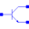
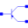

InversePotential |
Type Information
| Real |
Quantity: InversePotential Unit: 1/V |
|---|
Used in Components (8)
|  |
Modelica.Electrical.Analog.Semiconductors Simple NPN BJT according to Ebers-Moll with heating port |
|  |
Modelica.Electrical.Analog.Semiconductors Simple PNP BJT according to Ebers-Moll with heating port |
|
Modelica.Electrical.Spice3.Internal Record with technology parameters (.model) |
|
|
Modelica.Electrical.Spice3.Internal Record with technology parameters (.model) |
|
|
Modelica.Electrical.Spice3.Internal.Mos Record for Mosfet model line parameters (for level 1, 2, 3 and 6) |
|
|
Modelica.Electrical.Spice3.Internal.Bjt Record for bjt model line parameters |
|
|
Modelica.Electrical.Spice3.Internal.Fet Record for Fet model line parameters |
|
|
Modelica.Electrical.Spice3.Internal.Jfet Record for Jfet model line parameters |